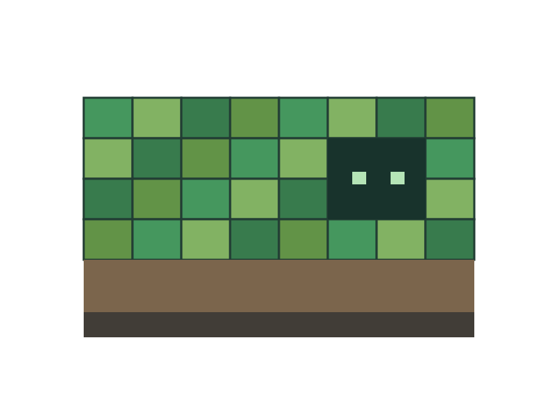

Small first
Start with a small view distance and a few people. Watch the tick time under an ordinary session.
Measure
Start with a small view distance and a few people. Watch the tick time under an ordinary session.
MeasureKeep a separate copy before installing a new plugin, mod or server version.
ProtectChange one setting at a time and write down what improved.
Compare